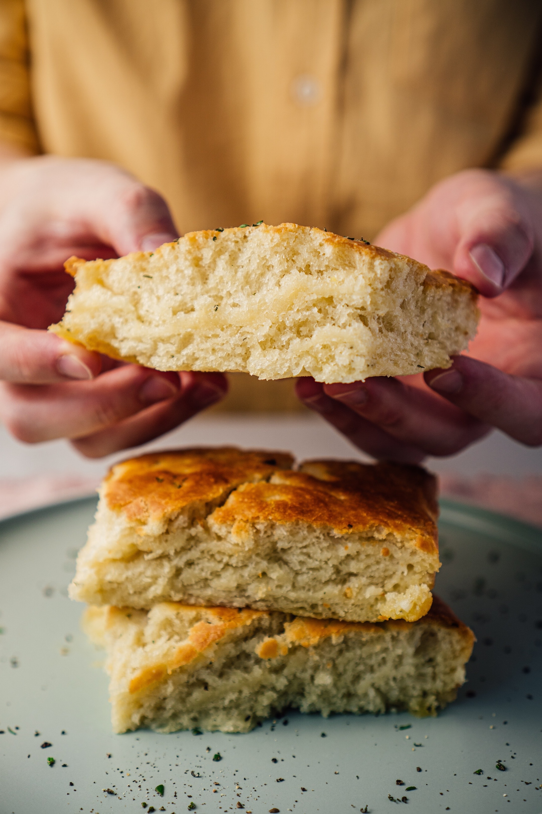

Delcious Garlic Herb Focaccia Bread

Description:
Delicious garlic and herb focaccia bread is able to be made in one hour from start to bite. Whether you're going to be using it as a side dish, main meal or crust of a pizza this recipe is the one to go with.
This recipe's easy to follow steps and fail proof high quality dough makes it a perfect choice to impress your nonna no matter how much of a beginner baker you are!
Ingredients:
- 1 Cup very warm water
- 3 Tbsp very warm water
- 1 Tbsp extra-virgin olive oil
- 3 cups bread flour
- 1 tsp white sugar
- 1 tsp salt
- 2 tsp active dry yeast
Toppings:
- 6 Cloves Garlic, crushed
- 1/3 cup extra-virgin olive oil
- 1 cup shredded parmesan cheese
- 1 tsp dried parsley
- 1/2 tsp onion powder
- 1/2 tsp herbes de Provence
- salt and freshly ground black pepper